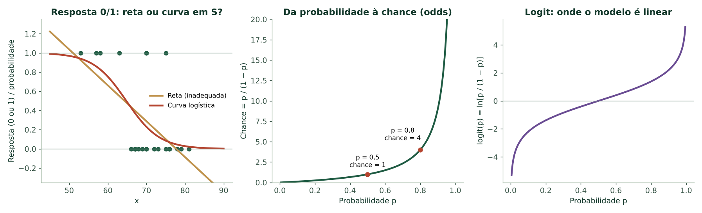
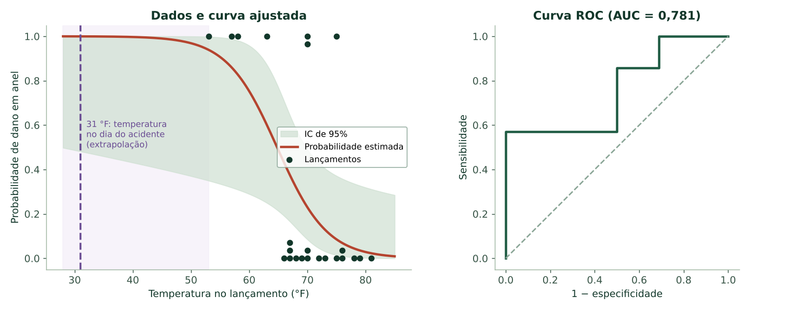

Regressão logística binária
Modela a probabilidade de um evento com dois resultados possíveis em função de um ou mais preditores.
Comece por aqui
Falhou ou não falhou. Aprovado ou reprovado. Quando a resposta tem apenas dois resultados, o que interessa prever é uma probabilidade, e probabilidades vivem entre 0 e 1. Uma reta não respeita esses limites. A regressão logística resolve o problema modelando a probabilidade por uma curva em forma de S, e é um dos métodos mais usados em engenharia de confiabilidade, saúde e ciência de dados.
Na véspera do lançamento do ônibus espacial Challenger, em janeiro de 1986, discutiu-se se o frio previsto (31 °F, cerca de −0,5 °C) comprometeria os anéis de vedação dos foguetes. A análise posterior dos 23 lançamentos anteriores (DALAL; FOWLKES; HOADLEY, 1989) tornou-se um exemplo clássico de regressão logística, e é o exemplo desta ficha.
O que é o modelo
A resposta \(y_i\) vale 1 (evento) ou 0 (não evento), com \(p_i=P(y_i=1)\). O modelo é linear no logit, o logaritmo da chance (odds). Três escalas convivem na análise:
| Escala | Definição | Intervalo | Exemplo |
|---|---|---|---|
| Probabilidade | p | 0 a 1 | 0,80 |
| Chance (odds) | p / (1 − p) | 0 a +∞ | 4 (quatro para um) |
| Logit | ln[p / (1 − p)] | −∞ a +∞ | 1,386 |

Pressupostos e como verificá-los
| Pressuposto | Por que importa | Como verificar |
|---|---|---|
| Resposta binária | Definição do modelo. | table(y): apenas dois valores. |
| Observações independentes | Dependência distorce erros-padrão. | Delineamento; para dados agrupados, use GEE ou modelos mistos. |
| Linearidade no logit para preditores quantitativos | O efeito de x é constante na escala logit. | Proporções observadas por faixas de x; termos quadráticos ou splines. |
| Ausência de separação perfeita | Se um preditor separa totalmente os grupos, as estimativas tendem ao infinito. | Avisos do R (fitted probabilities numerically 0 or 1) e erros-padrão enormes. |
| Ausência de multicolinearidade forte | Coeficientes instáveis. | car::vif(). |
| Número suficiente de eventos | A precisão depende da categoria menos frequente. | Referência usual: ao menos 10 eventos por parâmetro (PEDUZZI et al., 1996). |
Não se supõe normalidade nem variância constante: a variância de uma resposta binária é \(p(1-p)\), definida pelo próprio modelo.
Hipóteses e estatística de teste
Em que:
- \(\ell(\boldsymbol\beta)\)
- log-verossimilhança; os coeficientes são os valores que a maximizam (não há fórmula fechada: o cálculo é iterativo)
- \(b_j,\ EP(b_j)\)
- estimativa de máxima verossimilhança e seu erro-padrão
- \(z\)
- estatística de Wald
- \(D\)
- deviance: \(-2\ell\); mede o desajuste (quanto menor, melhor)
- \(G\)
- estatística da razão de verossimilhanças, com \(k\) graus de liberdade (número de preditores testados)
- \(OR_j\)
- razão de chances (odds ratio): fator que multiplica a chance quando \(x_j\) aumenta uma unidade
Exemplo numérico, passo a passo
No exemplo desta ficha, \(b_0=15{,}043\) e \(b_1=-0{,}232\) (temperatura em °F).
Para 70 °F: \(\operatorname{logit}=15{,}043-0{,}2322\times70=-1{,}211\).
Chance: \(e^{-1{,}211}=0{,}298\). Probabilidade: \(p=0{,}298/(1+0{,}298)=0{,}230\).
Razão de chances por grau: \(OR=e^{-0{,}2322}=0{,}793\): cada 1 °F a mais multiplica a chance de dano por 0,79 (redução de 21%).
Para 10 °F: \(e^{-2{,}322}=0{,}098\). No sentido inverso, 10 °F a menos multiplicam a chance por \(1/0{,}098\approx10\).
Teste de Wald: \(z=-0{,}2322/0{,}1082=-2{,}145\) ⇒ \(p=0{,}032\).
Propriedades
- A razão de chances é constante ao longo de x; a variação na probabilidade, não: ela é maior perto de p = 0,5 e menor nos extremos.
- \(OR=1\) indica ausência de efeito; \(OR>1\), aumento da chance; \(OR<1\), redução.
- O teste da razão de verossimilhanças é mais confiável que o de Wald em amostras pequenas; quando discordam, prefira o primeiro.
- O intervalo de confiança por verossimilhança perfilada (padrão do
confint()no R) é preferível ao de Wald em amostras pequenas; os dois coincidem em amostras grandes. - A razão de chances não é razão de probabilidades (risco relativo); só se aproximam quando o evento é raro.
- Medidas como o pseudo-R² de McFadden resumem o ganho de verossimilhança, mas não têm a interpretação de “variância explicada”.
Como interpretar os resultados
| Elemento | O que informa | Cuidado |
|---|---|---|
| Coeficiente bⱼ | Variação no logit por unidade de xⱼ. | Pouco intuitivo; converta em razão de chances. |
| OR = exp(bⱼ) | Fator multiplicativo da chance. | Não é “vezes mais provável”. |
| IC da OR | Precisão do efeito. | Se contém 1, o efeito não é distinguível de zero. |
| Deviance residual × nula | Ganho de ajuste com os preditores. | Compare pelo teste G. |
| Probabilidades previstas | Tradução do modelo para a escala de interesse. | Fora da faixa dos dados, são extrapolações. |
| Matriz de confusão e AUC | Capacidade de discriminar eventos e não eventos. | Dependem do ponto de corte e, calculadas nos mesmos dados do ajuste, são otimistas. |
Reporte os coeficientes, as razões de chances com intervalos de confiança, o teste global, o número de eventos e algumas probabilidades previstas em valores relevantes dos preditores.
Como executar no R e em Python
Onde executar o código em Python
Não é preciso instalar nada: o Google Colab é um computador na nuvem, gratuito, que executa Python pelo navegador e já traz as bibliotecas usadas aqui (numpy, scipy e matplotlib).
glm() com family = binomial ajusta o modelo; pertence ao pacote stats, já instalado com o R. A resposta deve estar codificada como 0/1 ou como fator com dois níveis (o segundo nível é tratado como evento). Para a curva ROC, o pacote pROC é o mais usado.
modelo <- glm(y ~ x, data = dados, family = binomial)
summary(modelo)
exp(cbind(OR = coef(modelo), confint(modelo)))
O código Python desta ficha faz as contas passo a passo com numpy, para que cada resultado possa ser acompanhado. No dia a dia, a biblioteca statsmodels, também disponível no Google Colab, oferece o ajuste e a tabela de resultados prontos.
Exemplo de aplicação
Contexto dos dados
Cada linha é um dos 23 lançamentos do ônibus espacial anteriores ao acidente da Challenger: a temperatura no momento do lançamento (°F) e a ocorrência de dano em pelo menos um anel de vedação (1 = sim, 0 = não). Queremos estimar como a probabilidade de dano varia com a temperatura.
Código em R
# Regressão logística binária: exemplo completo ----
# Pacote: apenas o stats (já vem com o R).
# 1. Dados: 23 lançamentos do ônibus espacial antes do acidente da Challenger (Dalal et al., 1989)
dados <- data.frame(
temp = c(66, 70, 69, 68, 67, 72, 73, 70, 57, 63, 70, 78, 67, 53, 67, 75, 70, 81, 76, 79, 75, 76, 58),
falha = c( 0, 1, 0, 0, 0, 0, 0, 0, 1, 1, 1, 0, 0, 1, 0, 0, 0, 0, 0, 0, 1, 0, 1))
table(dados$falha)
tapply(dados$temp, dados$falha, mean)
# 2. Ajuste do modelo logit(p) = b0 + b1 * temperatura
modelo <- glm(falha ~ temp, data = dados, family = binomial)
summary(modelo)
# 3. Razão de chances (odds ratio) e intervalos de confiança de 95%
exp(coef(modelo))
exp(confint.default(modelo)) # IC de Wald
exp(confint(modelo)) # IC por verossimilhança perfilada
# 4. Teste da razão de verossimilhanças
anova(modelo, test = "Chisq")
# 5. Probabilidades estimadas
novo <- data.frame(temp = c(81, 70, 65, 53, 31))
cbind(novo, prob = predict(modelo, novo, type = "response"))
-coef(modelo)[1] / coef(modelo)[2] # temperatura em que p = 0,5
# 6. Classificação com ponto de corte 0,5
prob <- fitted(modelo)
table(observado = dados$falha, previsto = as.numeric(prob >= 0.5))
# 7. Área sob a curva ROC (pacote pROC): install.packages("pROC")
# pROC::auc(dados$falha, prob)
# 8. Gráfico: dados e curva ajustada
plot(falha ~ temp, data = dados, pch = 19, xlim = c(30, 85),
xlab = "Temperatura (°F)", ylab = "Probabilidade de dano")
curve(predict(modelo, data.frame(temp = x), type = "response"), add = TRUE, col = "red", lwd = 2)
abline(v = 31, lty = 2)
A mesma análise em Python, com os resultados
Cole o código em um notebook do Google Colab ↗ e execute com Shift+Enter. Os valores abaixo são a saída desse código.
# Bibliotecas: numpy, scipy e matplotlib (já instaladas no Google Colab)
import numpy as np
from scipy import stats
import matplotlib.pyplot as plt
def logistica(X, y, nomes):
"""Regressão logística por máxima verossimilhança (mínimos quadrados ponderados iterativos)."""
X = np.column_stack([np.ones(len(y)), X]); beta = np.zeros(X.shape[1])
for it in range(50):
p = 1 / (1 + np.exp(-X @ beta)); W = p * (1 - p)
passo = np.linalg.solve(X.T @ (X * W[:, None]), X.T @ (y - p))
beta = beta + passo
if np.max(np.abs(passo)) < 1e-10: break
p = 1 / (1 + np.exp(-X @ beta))
cov = np.linalg.inv(X.T @ (X * (p * (1 - p))[:, None])); ep = np.sqrt(np.diag(cov))
z = beta / ep; pv = 2 * stats.norm.sf(np.abs(z))
print(f"{'Termo':<13}{'Estimativa':>11}{'Erro-padrão':>13}{'z':>9}{'p-valor':>10}")
for nm, b, e, zi, pi in zip(["(Intercepto)"] + nomes, beta, ep, z, pv):
print(f"{nm:<13}{b:>11.4f}{e:>13.4f}{zi:>9.3f}{pi:>10.4f}")
logv = np.sum(y * np.log(p) + (1 - y) * np.log(1 - p))
return dict(X=X, beta=beta, ep=ep, cov=cov, p=p, logv=logv, iteracoes=it + 1)
# 1. Dados: 23 lançamentos do ônibus espacial antes do acidente da Challenger (Dalal et al., 1989)
temp = np.array([66, 70, 69, 68, 67, 72, 73, 70, 57, 63, 70, 78, 67, 53, 67, 75, 70, 81, 76, 79, 75, 76, 58.]) # temperatura (°F)
falha = np.array([0, 1, 0, 0, 0, 0, 0, 0, 1, 1, 1, 0, 0, 1, 0, 0, 0, 0, 0, 0, 1, 0, 1.]) # dano em anel de vedação
n = len(falha)
print(f"n = {n} | lançamentos com dano = {int(falha.sum())} | temperatura média: com dano = {temp[falha == 1].mean():.1f}, sem dano = {temp[falha == 0].mean():.1f}")
# 2. Ajuste do modelo logit(p) = b0 + b1 * temperatura
m = logistica(temp, falha, ["temperatura"])
b0, b1 = m["beta"]
print("Iterações até a convergência:", m["iteracoes"])
# 3. Razão de chances (odds ratio) com IC de 95% de Wald
zc = stats.norm.ppf(0.975)
print(f"\nOR por 1 °F = {np.exp(b1):.4f}, IC 95% = [{np.exp(b1 - zc*m['ep'][1]):.4f}; {np.exp(b1 + zc*m['ep'][1]):.4f}]")
print(f"OR por 10 °F = {np.exp(10 * b1):.4f}, IC 95% = [{np.exp(10*(b1 - zc*m['ep'][1])):.4f}; {np.exp(10*(b1 + zc*m['ep'][1])):.4f}]")
# 4. Deviance, teste da razão de verossimilhanças, AIC e pseudo-R² de McFadden
p_nulo = falha.mean(); logv0 = n * (p_nulo * np.log(p_nulo) + (1 - p_nulo) * np.log(1 - p_nulo))
dev_nula, dev_res = -2 * logv0, -2 * m["logv"]
G = dev_nula - dev_res
print(f"\nDeviance nula = {dev_nula:.3f} ({n - 1} gl) | deviance residual = {dev_res:.3f} ({n - 2} gl) | AIC = {dev_res + 4:.3f}")
print(f"Teste da razão de verossimilhanças: G = {G:.3f}, gl = 1, p-valor = {stats.chi2.sf(G, 1):.4f}")
print(f"Pseudo-R² de McFadden = {1 - m['logv'] / logv0:.4f}")
# 5. Probabilidades estimadas, com IC de 95% (calculado na escala logit)
print("\nTemperatura Probabilidade IC 95%")
for t0 in [81, 70, 65, 53, 31]:
x0 = np.array([1, t0]); eta = x0 @ m["beta"]; ep_eta = np.sqrt(x0 @ m["cov"] @ x0)
inv = lambda v: 1 / (1 + np.exp(-v))
print(f"{t0:>8} °F {inv(eta):>12.4f} [{inv(eta - zc*ep_eta):.4f}; {inv(eta + zc*ep_eta):.4f}]")
print(f"Temperatura em que a probabilidade é 50%: {-b0 / b1:.1f} °F")
# 6. Classificação com ponto de corte 0,5 e área sob a curva ROC
pred = (m["p"] >= 0.5).astype(int)
vp = int(np.sum((pred == 1) & (falha == 1))); fn = int(np.sum((pred == 0) & (falha == 1)))
fp = int(np.sum((pred == 1) & (falha == 0))); vn = int(np.sum((pred == 0) & (falha == 0)))
print(f"\nMatriz de confusão: VP = {vp}, FN = {fn}, FP = {fp}, VN = {vn}")
print(f"Acurácia = {(vp + vn) / n:.3f} | sensibilidade = {vp / (vp + fn):.3f} | especificidade = {vn / (vn + fp):.3f}")
U = stats.mannwhitneyu(m["p"][falha == 1], m["p"][falha == 0]).statistic
print(f"AUC = {U / (falha.sum() * (n - falha.sum())):.4f}")
# 7. Gráfico: dados e curva ajustada
ts = np.linspace(30, 85, 200)
plt.scatter(temp, falha); plt.plot(ts, 1 / (1 + np.exp(-(b0 + b1 * ts))), color="red")
plt.xlabel("Temperatura (°F)"); plt.ylabel("Probabilidade de dano"); plt.show()
Resultados da execução
n = 23 | lançamentos com dano = 7 | temperatura média: com dano = 63.7, sem dano = 72.1
Termo Estimativa Erro-padrão z p-valor
(Intercepto) 15.0429 7.3786 2.039 0.0415
temperatura -0.2322 0.1082 -2.145 0.0320
Iterações até a convergência: 7
OR por 1 °F = 0.7928, IC 95% = [0.6413; 0.9802]
OR por 10 °F = 0.0981, IC 95% = [0.0118; 0.8185]
Deviance nula = 28.267 (22 gl) | deviance residual = 20.315 (21 gl) | AIC = 24.315
Teste da razão de verossimilhanças: G = 7.952, gl = 1, p-valor = 0.0048
Pseudo-R² de McFadden = 0.2813
Temperatura Probabilidade IC 95%
81 °F 0.0227 [0.0012; 0.3112]
70 °F 0.2300 [0.0851; 0.4895]
65 °F 0.4881 [0.2136; 0.7700]
53 °F 0.9392 [0.3499; 0.9978]
31 °F 0.9996 [0.4816; 1.0000]
Temperatura em que a probabilidade é 50%: 64.8 °F
Matriz de confusão: VP = 4, FN = 3, FP = 0, VN = 16
Acurácia = 0.870 | sensibilidade = 0.571 | especificidade = 1.000
AUC = 0.7812
| Elemento | Valor | Leitura |
|---|---|---|
| Lançamentos / com dano | 23 / 7 | Apenas 7 eventos: pouca informação. |
| Coeficiente da temperatura | −0,232 (EP 0,108) | Mais calor, menor chance de dano. |
| Teste de Wald | z = −2,145; p = 0,032 | |
| Teste da razão de verossimilhanças | G = 7,95; 1 g.l.; p = 0,0048 | Evidência mais clara que a do Wald. |
| OR por 1 °F (IC 95% de Wald) | 0,793 [0,641; 0,980] | Redução de 21% na chance a cada grau. |
| OR por 10 °F | 0,098 [0,012; 0,819] | Dez graus a menos multiplicam a chance por cerca de 10. |
| Deviance nula → residual | 28,27 → 20,32 | AIC = 24,32; pseudo-R² de McFadden = 0,281. |
| Probabilidade a 81, 70, 65 e 53 °F | 0,023; 0,230; 0,488; 0,939 | Probabilidade de 50% em 64,8 °F. |
| Probabilidade a 31 °F | 0,9996; IC [0,48; 1,00] | Extrapolação 22 °F abaixo do menor valor observado. |
| Classificação (corte 0,5) | Acurácia 0,870; sensibilidade 0,571; especificidade 1,000 | 4 dos 7 danos identificados; nenhum falso alarme. |
| AUC | 0,781 | Discriminação razoável. |
Leitura: os dados indicam que o risco de dano nos anéis aumenta à medida que a temperatura cai, e o teste da razão de verossimilhanças dá suporte claro a essa relação. Para 31 °F, o modelo estima probabilidade próxima de 1, mas essa é uma extrapolação muito além dos dados, e o intervalo de confiança (de 0,48 a 1,00) mostra o tamanho da incerteza. A conclusão sustentável não é “a falha era certa”, e sim que os dados apontavam risco crescente com o frio e não ofereciam nenhuma evidência de segurança naquela temperatura. Duas ressalvas técnicas: com 7 eventos, a amostra está abaixo do recomendado, e as medidas de classificação foram calculadas nos mesmos dados do ajuste, de modo que são otimistas.
Erros comuns
| Erro | Como evitar |
|---|---|
| Ler a razão de chances como razão de probabilidades | OR = 2 significa chance dobrada, não probabilidade dobrada. |
| Usar regressão linear para resposta 0/1 | Previsões fora de [0, 1] e variância não constante. |
| Ignorar a separação perfeita | Coeficientes e erros-padrão gigantes indicam o problema; use a correção de Firth (logistf). |
| Poucos eventos para muitos preditores | Estimativas instáveis e sobreajuste; reduza o modelo. |
| Avaliar a classificação nos dados de treino | Use separação treino–teste ou validação cruzada. |
| Adotar o corte 0,5 sem pensar nos custos | Escolha o ponto de corte conforme o custo de cada tipo de erro; veja métricas de classificação. |
| Extrapolar para fora da faixa dos preditores | Sinalize a extrapolação e a incerteza. |
| Dicotomizar uma resposta contínua para usar logística | Perde-se informação; modele a resposta original. |
Alternativas e fluxo de trabalho
| Procedimento | Quando preferir |
|---|---|
| Regressão probit | Tradição da área ou modelo com variável latente normal; resultados muito semelhantes. |
| Logística multinomial | Resposta com três ou mais categorias sem ordem. |
| Logística ordinal | Resposta com categorias ordenadas. |
| Regressão logística de Firth | Separação perfeita ou eventos raros. |
| Regressão de Poisson com variância robusta | Interesse em razões de risco, e não em razões de chances. |
| Análise discriminante, árvores, random forests | Foco em classificação com relações complexas. |
| GEE / modelos mistos | Observações agrupadas ou repetidas. |
- Verifique a codificação da resposta e conte os eventos.
- Explore a relação de cada preditor com a proporção de eventos.
- Ajuste o modelo e examine avisos de convergência.
- Interprete por razões de chances e por probabilidades previstas.
- Avalie ajuste e capacidade de discriminação, de preferência em dados novos.
Referências desta ficha
- DALAL, Siddhartha R.; FOWLKES, Edward B.; HOADLEY, Bruce. Risk analysis of the space shuttle: pre-Challenger prediction of failure. Journal of the American Statistical Association, v. 84, n. 408, p. 945-957, 1989. (Fonte dos dados do exemplo.)
- COX, David R. The regression analysis of binary sequences. Journal of the Royal Statistical Society: Series B, v. 20, n. 2, p. 215-242, 1958.
- HOSMER, David W.; LEMESHOW, Stanley; STURDIVANT, Rodney X. Applied logistic regression. 3. ed. Hoboken: Wiley, 2013.
- AGRESTI, Alan. Categorical data analysis. 3. ed. Hoboken: Wiley, 2013.
- PEDUZZI, Peter et al. A simulation study of the number of events per variable in logistic regression analysis. Journal of Clinical Epidemiology, v. 49, n. 12, p. 1373-1379, 1996.
- McFADDEN, Daniel. Conditional logit analysis of qualitative choice behavior. In: ZAREMBKA, Paul (ed.). Frontiers in econometrics. New York: Academic Press, 1974. p. 105-142.
- JAMES, Gareth; WITTEN, Daniela; HASTIE, Trevor; TIBSHIRANI, Robert. An introduction to statistical learning: with applications in R. 2. ed. New York: Springer, 2021.
- R CORE TEAM. R: a language and environment for statistical computing. Vienna: R Foundation for Statistical Computing, 2026. Disponível em: https://www.r-project.org/. (Funções
glm,confintepredict.glm, pacotestats.) - POSIT TEAM. RStudio: integrated development environment for R. Boston: Posit Software, PBC. Disponível em: https://posit.co/download/rstudio-desktop/.
- VIRTANEN, Pauli et al. SciPy 1.0: fundamental algorithms for scientific computing in Python. Nature Methods, v. 17, p. 261-272, 2020. DOI: 10.1038/s41592-019-0686-2. (Funções do módulo
scipy.stats.) - HARRIS, Charles R. et al. Array programming with NumPy. Nature, v. 585, p. 357-362, 2020. DOI: 10.1038/s41586-020-2649-2.
- HUNTER, John D. Matplotlib: a 2D graphics environment. Computing in Science & Engineering, v. 9, n. 3, p. 90-95, 2007.
- GOOGLE. Google Colaboratory. Disponível em: https://colab.research.google.com/.
- As figuras desta ficha foram elaboradas pelo autor.

Prof. Dr. Cássius Henrique Xavier Oliveira
Professor · ICTIN/UFLA · Estatística, Confiabilidade e Ciência de Dados.
Conheça minha trajetória e projetos →